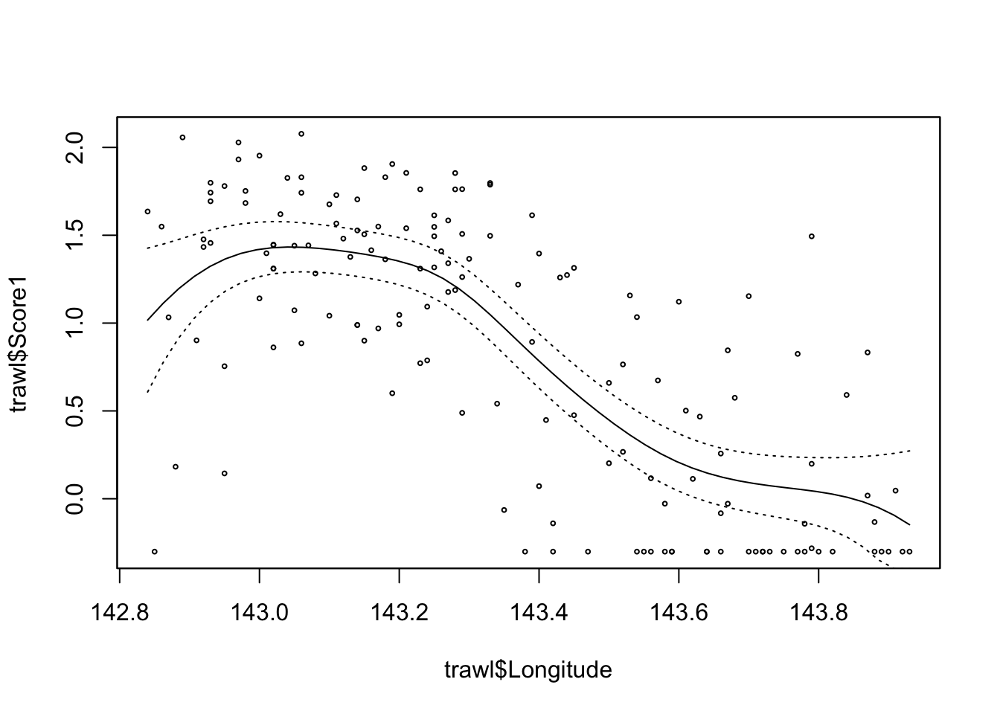

1.3 A case study: reading attainment
First we read the data.
ggplot graphics again provides a simple way of producing some attractive and helpful visualisations.
library(ggplot2)
ggplot(d, aes(Age, Readatt)) + geom_point() +
facet_grid(Ethnicity ~ Sex)
ggplot(d, aes(Age, Readatt, col = Sex)) + geom_point() +
facet_wrap(vars(School))

We need to think carefully about how the errors should be modelled. For the moment, we will include only Age in the fixed effects, as this is the variable which clearly influences reading ability strongly. A random effect for each pupil, which allows them to display greater or lesser individual ability, is a good starting point. A residual plot helps us to assess the adequacy of this model, in an informal manner. Some non-random patterns suggest that we need to improve the model.
Another plot may help. This one shsows the trajectory of each individual over time. An interesting feature is a suggestion that these trajectories ‘fan out’ a little over time. This may suggest that pupils who are good readers at an early stage improve their reading ability over time at a greater rate than those who are poorer readers. This sounds plausible.

We can incorporate this into a model by describing these trajectories through straight lines (plus random error) whose slopes are described by random effects. The lme syntax enables this to be specified easily. The residual plot nolonger shows non-random features and a formal test confirms that the simple random effects model is inadequate, in comparison with the model which allows random slopes.
model2 <- lme(Readatt ~ Age, random = ~Age | School/Pupil, data = d)
plot(model2)
anova(model1, model2)## Model df AIC BIC logLik Test L.Ratio p-value
## model1 1 5 3805.112 3832.466 -1897.556
## model2 2 9 3213.340 3262.577 -1597.670 1 vs 2 599.7717 <.0001
Now that our model has a good random effects structure, we can examine the fixed effects in greater detail. The summary gives no evidence of an ethnicity effect, but does show a sex effect with girls producing a better average performance, in addition to the age effect which we already know is present.
model3 <- lme(Readatt ~ Age + Sex + Ethnicity, random = ~Age | School/Pupil,
data = d)
summary(model3)$tTable## Value Std.Error DF t-value p-value
## (Intercept) 7.11786482 0.08078767 1350 88.105827 0.00000000
## Age 0.99302507 0.01567781 1350 63.339507 0.00000000
## Sexgirl 0.13267770 0.06133136 372 2.163293 0.03115494
## Ethnicitywhite -0.09410687 0.06497269 372 -1.448407 0.14834569It would be wise for us to examine whether interactions might be present. That is left as an exercise.